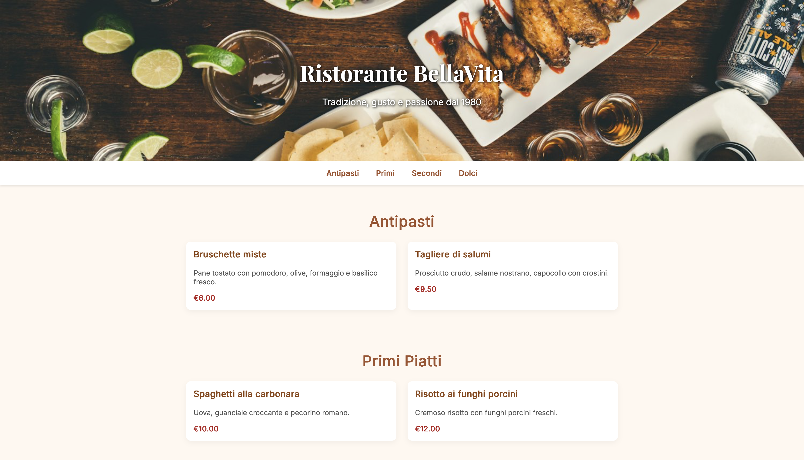

I miei progetti personali
Di seguito trovi alcuni dei progetti che ho realizzato personalmente. Ogni progetto è stato sviluppato da zero, applicando competenze tecniche e attenzione al design per offrire soluzioni pratiche e professionali.

Sito Web Note Personali
Un'applicazione web per creare, salvare e gestire note personali.
Funziona con sistema di registrazione/login, database MySQL e dashboard privata.
Realizzata in PHP, con un'interfaccia semplice e funzionale.
È uno dei miei progetti principali lato back-end.

Menu Digitale per Ristorante
Progetto front-end per la visualizzazione di un menù digitale responsive, pensato per ristoranti e locali.
Realizzato in HTML, CSS e JavaScript, con una struttura chiara e compatibile con tutti i dispositivi.
Ideale per migliorare l’esperienza utente nei locali moderni.